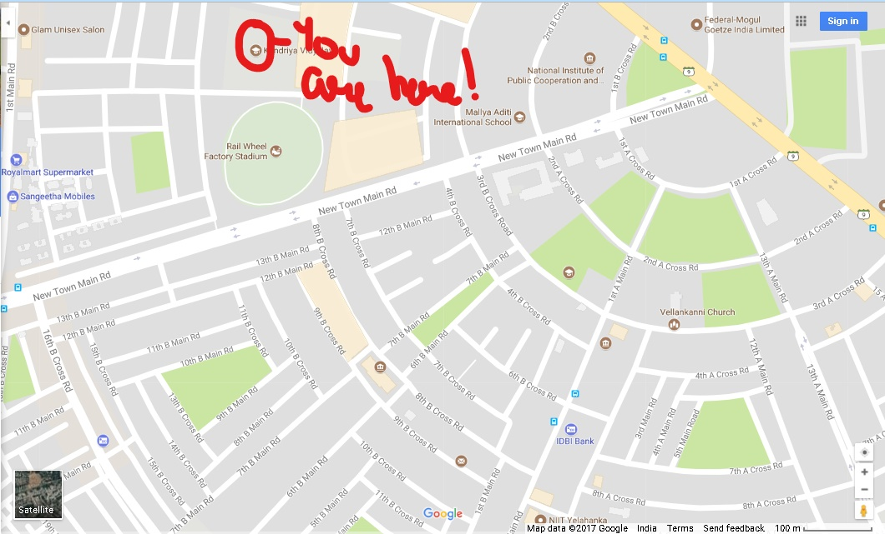

RIDDLE 3
NAME: Mrs.Sushma Yadav
AGE: 28
REASON OF DEATH: Shot in the heart with a silencer gun
KILLER: Same black clothed murderer
EVIDENCE: Blood stains of the murderer on the victim .
INFORMATION:the victim tried to fight back when he tried to stab her and she stabbed him on legs and that's when he shot her in rage. The DNA from blood seems to match with the fingerprint.
RIDDLE 4: "Where people gather to CHEER and named after a LOCOMOTIVE PART lies part of a mouth".

MARK URSELF FOR I SHALL BE STABBED